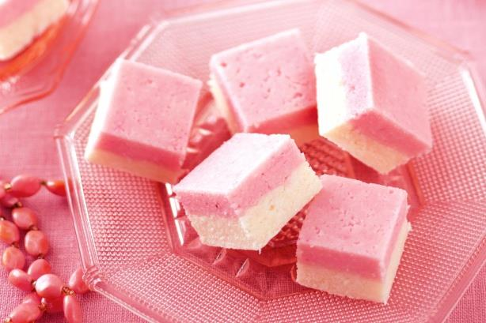

1.Fine Grated Coconut -2 Cups
2.Condensed Milk -1 Can(300 ml)
3.Cardamom - 5 no's (crushed)
4.Edible food colour - 2 drops
Heat a non stick pan in medium flame and add the grated coconut.
Saute until the coconut flavor comes and check it doesn't turn brown(it takes 5 to 10 minutes).
Now add the condensed milk and cardamom.
Saute for 5 minutes continuously until everything rolls out to a ball.
Add color(optional) and mix it.Usually burfi is in white color.
Switch off the stove.
Take a plate or any non stick vessel and grease with butter.
Pour the Burfi mixture and pat it tightly with hands.
Keep it refrigerated for 1/2 hour for firmness.
Now cut the Burfi with buttered knife with vertical lines.
Turn the plate to 45 degrees and again cut into vertical lines to form diamond shape.